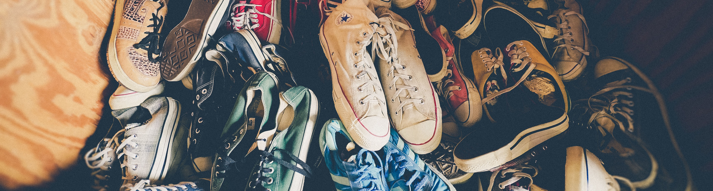

Le Collectif EN-Trop! est une association de bénévoles faisant partie de toutes les communes de Bruxelles. Nous proposons aux personnes qui possèdent trop de choses (et qui voudraient s'en débarasser...) de venir les donner, pour que nous puissions les redistribuer aux personnes les plus démunies de la commune.
Vous partez en week-end et votre frigo est plein! Pas de soucis! Nous nous ferons un plaisir de redistribuer ces vivres à des personnes qui en ont vraiment besoin.
Trop de chaussures? Trop de vêtements? Envie de faire un tri? Certaines personnes manquent vraiment de produits de première nécéssité et seraient heureuse de pouvoir avoir des vêtements à leur taille.
Un meuble à jeter mais encore fonctionnel? Il pourrait peut-être faire plaisir à une famille...
En faite, quand vous réfélchissez, vous pourriez aider tellement de monde :)

Nous sommes présent tous les mardis et vendredis dans votre commune, de 18h à 19h.
Toute la nourriture est redistribuée
le jour même. Les objets, vêtements et meubles seront soit redistribués, soit revendus aux bénéfices du fond d'aide social de votre commune.
"La solidarité, c'est aider chacun à porter le poids de la vie et à la rendre plus facile."(
Citation de Henri-Frédéric Amiel)